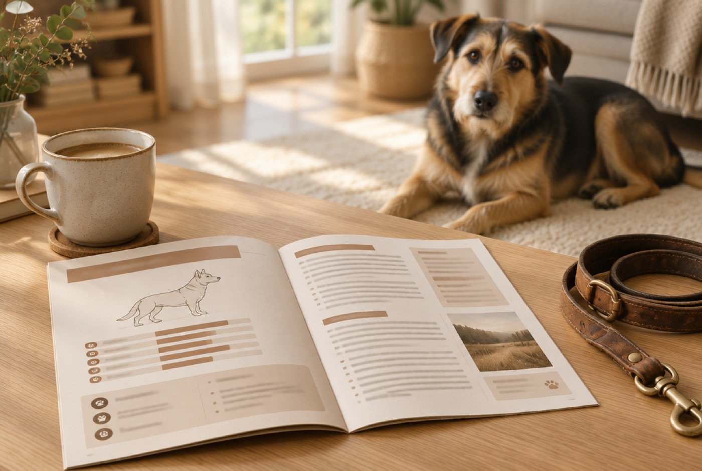

🐾 Nur für Pfoten-Plan-Kunden · Profil kommt sofort per E-Mail
Pfoten-Plan
Das Charakterprofil
Deinen Hund näher kennenlernen
Verstehen, warum er so ist. Und was er jeden Tag wirklich braucht.

🧬 Auf seine Rasse gerechnet
Kommt als PDF per E-Mail. Am Handy lesen oder ausdrucken.
🧬
—
🔒Im Profil außerdem: seine Gassi-Zeiten, sein Schlafbedarf, seine typischen Baustellen und die drei Dinge, die du ihm besser ersparst.
Kurz zuordnen, dann geht's los
Wir holen deine Angaben aus dem Fragebogen zurück
Deine E-Mail genügt — Name und Rasse haben wir von letztem Mal noch. Dorthin geht danach auch das fertige Profil.
Bitte prüf die Adresse noch einmal.
Welche Rasse ist dein Hund?
Such sie einmal heraus, das Profil wird komplett daraus gerechnet.
Eine Frage, dann geht's los
Was steckt in deinem Hund drin?
Bei dir steht „Mischling“ im Fragebogen. Da brauchen wir noch ein paar Infos mehr. Das ganze Profil wird aus den Rassen gerechnet: Bewegung, Schlaf, typische Baustellen. Sag uns, was vermutlich drinsteckt, und wir zeigen dir, welcher Anteil sich in welchem Verhalten zeigt.
Bis zu drei Rassen. Was Tierarzt oder Tierheim gesagt haben, oder wonach er aussieht.
Kein Problem. Dann bauen wir das Profil über Größe, Alter und sein Verhalten auf.
Das steht drin
🧬Rasse-SteckbriefWofür sie gezüchtet wurde und was das bei dir zu Hause bedeutet.
🚶Gassi-Zeiten, die passenWie lange, wie oft, welches Tempo.
😴Schlaf und RuheWie viel er braucht und woran du Übermüdung erkennst.
🧠KopfarbeitWelche Beschäftigung zu seinem Kopf passt und wie viel genug ist.
⚠️Typische BaustellenWas bei diesem Typ Hund erfahrungsgemäß schwierig wird.
🚫Was du ihm ersparstDrei Dinge, die gut gemeint sind und trotzdem schaden.
49,90 €
34,90 €
Einmalig · kein Abo · sofort per E-Mail
🛡️ 30 Tage Geld-zurück-GarantieBringt dich das Profil nicht weiter, schreib uns eine Zeile.
★★★★★ 4,8 von 5🔒 Sichere Zahlung📩 Sofort per E-Mail
„Der Teil über den Schlafbedarf hat mir die Augen geöffnet. Sie war einfach dauernd übermüdet.“
Renate, 61 · mit Mischling Emma
„Endlich erklärt mir mal jemand, warum er so ist.“
Karl-Heinz, 64 · mit Terrier-Mix Paula
Woher wisst ihr die Rasse?
Aus deinem Fragebogen von damals. Wenn sich das geändert hat oder etwas nicht stimmt, kannst du es oben mit einem Klick korrigieren.
Ist das dasselbe wie mein Trainingsplan?
Nein. Der Plan sagt, was ihr übt. Das Profil erklärt, warum dein Hund so tickt.
Wann bekomme ich es?
Sofort nach dem Kauf per E-Mail als PDF. Kein Abo, keine Folgekosten.